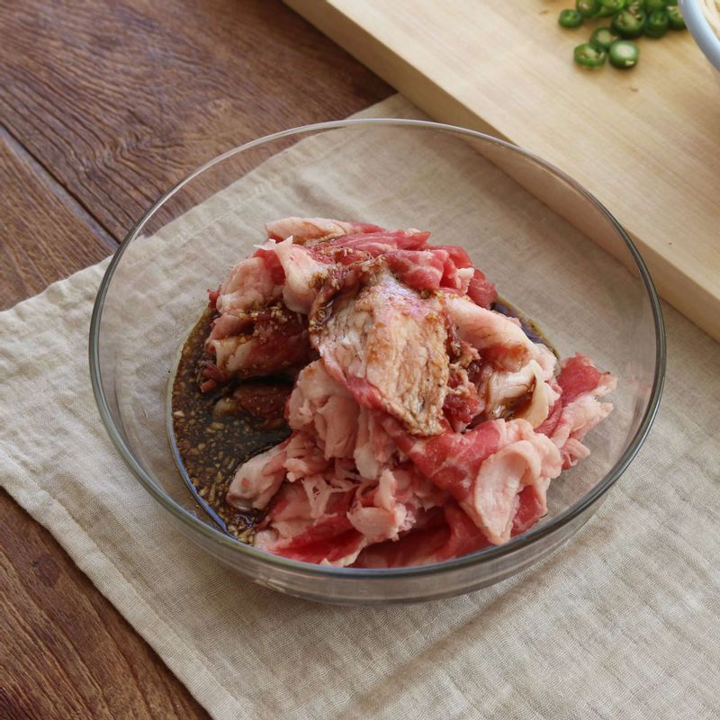
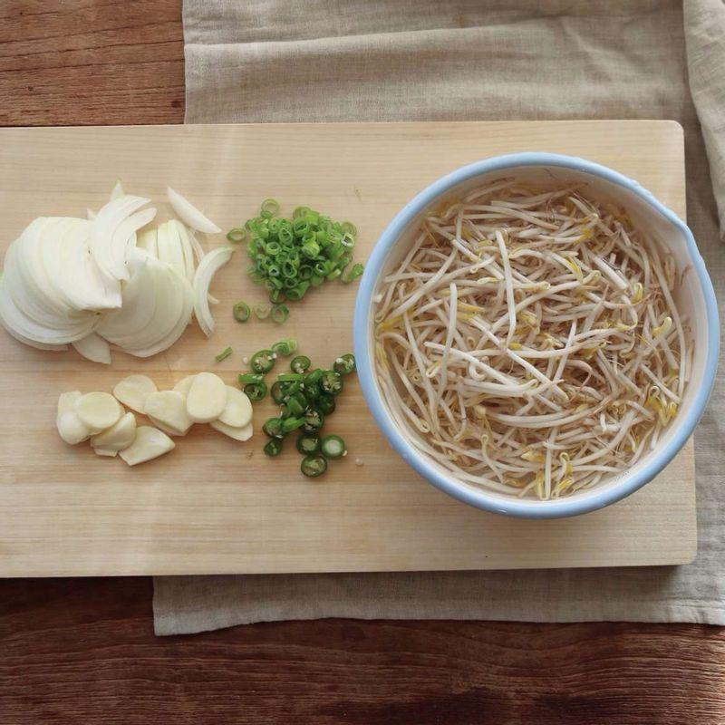
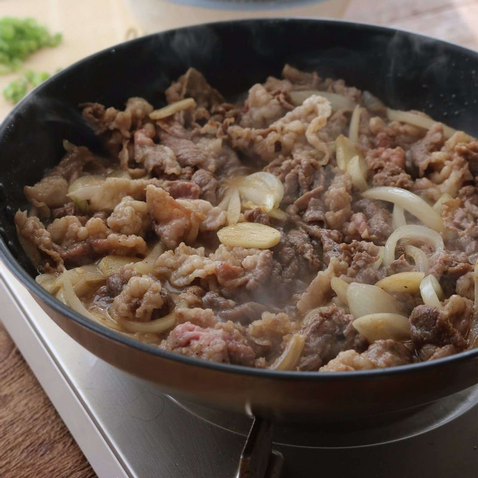
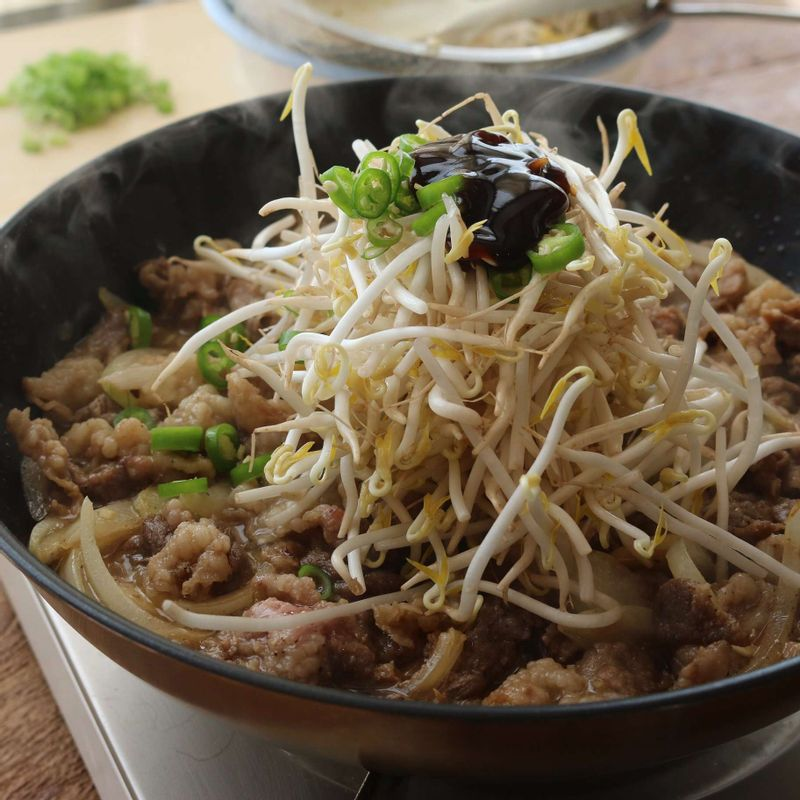
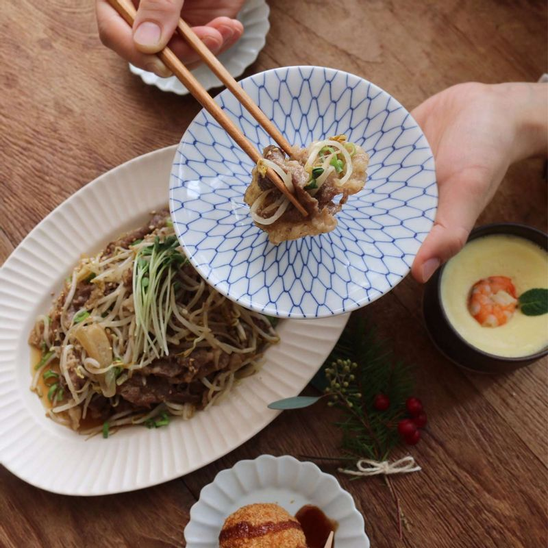

-

차돌박이는 키친타월에 올려 핏물을 제거한 후, 고기양념 재료에 20분정도 밑간해주세요.
-

숙주는 흐르는 물에 깨끗이 씻은 후 체에 밭쳐 물기를 빼고, 양파는 굵게 채썰어 주세요. 마늘은 편으로 썰고 청양고추와 실파는 송송 썰어주세요.
-

달군 팬에 기름을 두르고, 마늘편과 양파채를 넣어 2분정도 볶아주세요. 마늘향이 올라오면 양념한 차돌박이를 넣어 볶아주세요
-

차돌박이가 익으면 숙주와 청양고추, 굴소스를 넣고 숙주가 아삭하게 익을 정도로만 볶은 후 마지막에 참기름을 넣고 불을 꺼주세요.
-

차돌박이 숙주볶음에 통깨를 뿌린 후, 송송 썬 실파와 무순을 올려 장식해주세요.